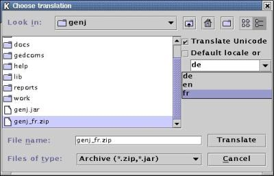

ResEdit - The Resource Editor
This is an external program to GenJ made to translate the resource
files to another language (eg. to translate them into french).
What do you need to run it?
First of all, you have to create a startup file named for example
resedit (if you run Linux), or resedit.cmd (if you
run OS/2), etc...
In it, put the following commands (this example is given for Linux,
but change it to match your system, of course) :
#!/bin/sh
#
# The following 2 lines are the only ones you have to change to match your system
JAVA_HOME=/usr/local/jdk1.2.2
GENJ_HOME=/home/fm/genj
echo "/*"
echo " * Resource Editor startup file for Genj"
echo " * "
echo " * If something goes wrong now you probably have an"
echo " * incomplete CLASSPATH. Either copy swing.jar to"
echo " * your lib sub-directory or specify its location via"
echo " * (e.g.) export CLASSPATH=/usr/lib/swing/swing.jar"
echo " * before starting this script."
echo " */"
export CLASSPATH=./lib/resedit.jar:./lib/swing.jar:$CLASSPATH
export PATH=$JAVA_HOME/bin:$PATH
cd $GENJ_HOME
$JAVA_HOME/bin/java com.nm.resedit.Main
To start the resource editor, all you have to do now is to run
your startup file you've just created by typing "resedit".
After clicking on the OPEN button once started up, please select
an input archive, (eg. genj.jar) - but see N.B. below.
Then either translate the existing texts by loading a TRANSLATION
or go through texts manually.
In the second case, you have to select a node on the left (corresponds
to a directory) to start the translation. Then choose resource lines
on the right and enter the translation in the input line at the bottom.
If you want to load a translation, click on the translate icon on
the main menu, then select the translation file you want to
edit/modify (eg. genj_fr.zip). Once selected, uncheck the
option "Default locale or ..." and choose the appropriate locale
(in my example, I have to choose "fr"). Once done, you have to
click on the translate button.
N.B. Starting from GenJ v. 1.7 and Resedit 0.02, it's better to open
the genj_en.zip file instead of genj.jar. So click first
on the open button, then select genj_en.zip, once done, click on the
translate button, and select the translation file you want to edit/modify.
etc...(see above).

After translating the resource lines, you can SAVE the resulting
archive to a ZIP or JAR file. You have to specify which locale you
are referring to, during LOAD, TRANSLATE or SAVE. This corresponds
to a resources_xyz.properties file schema which is then used by
the application loading these resources. The name of the files
you load and save is not important for Java - the locale you choose
is used inside the language archive only. For organizing the
files it's simply easier to identify them as genj_XY.zip (where
XY is the contained locale - eg : genj_fr.zip).
|
Notes :
|
|
- For Java 1.1: You must have a swing.jar
library in your classpath.
|
|
- And I saw that to have Resedit (v. 0.01) to work,
the genj.jar and genj_XY.zip files must be located in
your main GenJ directory, not in your /genj/lib subdirectory.
|
What files are available?
Actually, those resource files are available :
- Dutch resource file : not yet
- English resource file : genj_en.zip
- French resource file : genj_fr.zip
- German resource file : genj_de.zip
- Italian resource file : soon
(The English, German, and French language files have been
updated with the latest genj release)